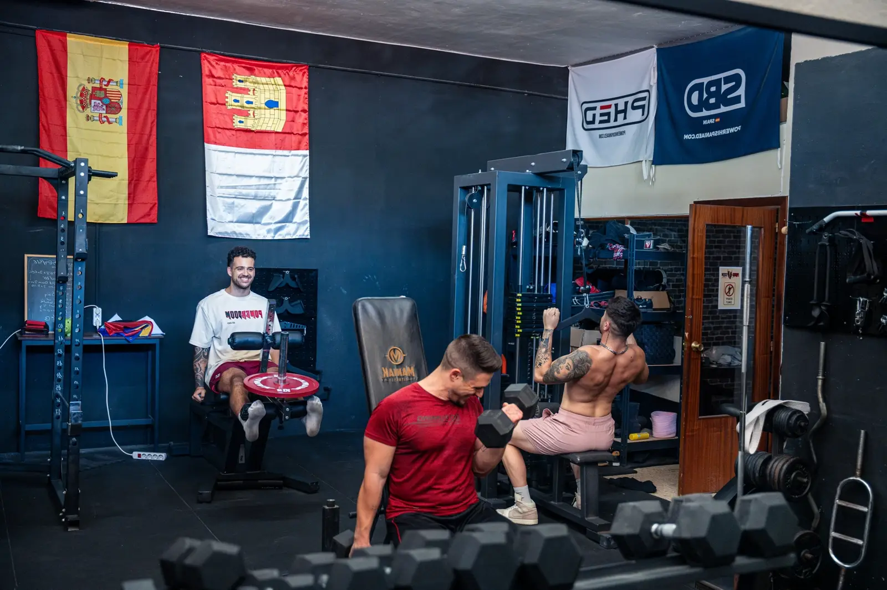

Muscle-up4 meses
De 0 dominadas
al muscle-up
Javier · Enfermero con guardias · padre de dos
0 dominadas→Muscle-up + 8 dominadas
«Entrenaba cuando podía y nunca sabía si lo hacía bien. Aquí me dijeron el primer día por dónde empezaba y qué tocaba cada semana.»